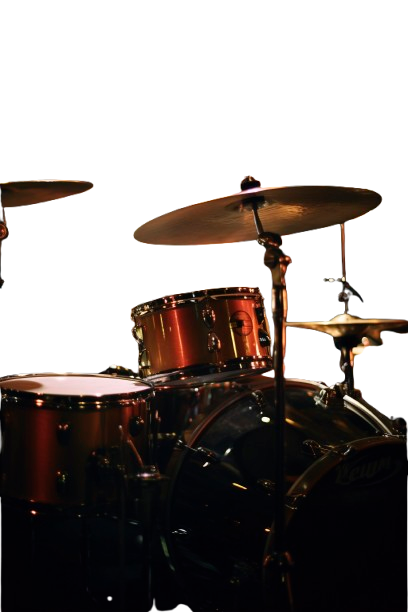
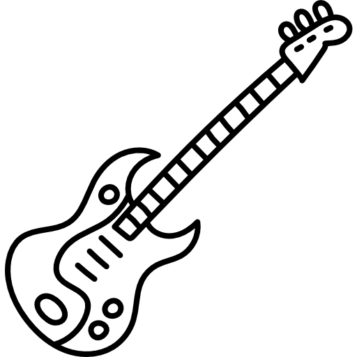
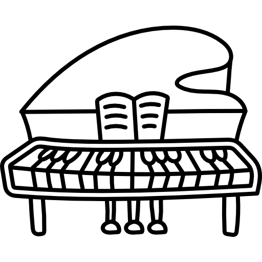
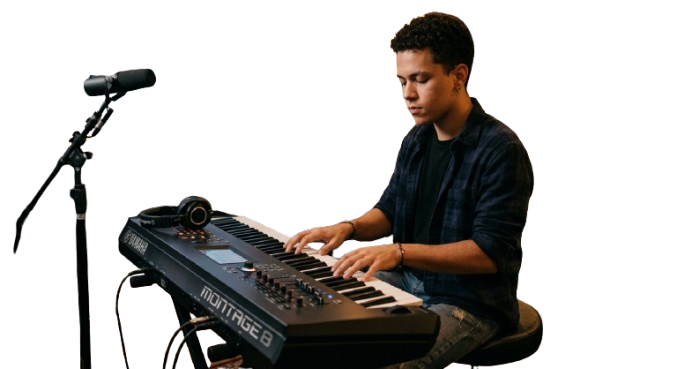
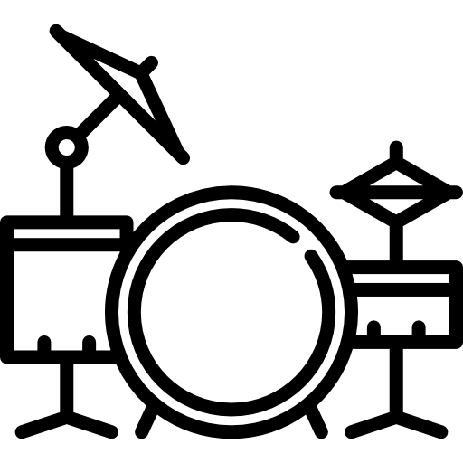

Aprenda com os melhores
Professores altamente qualificados, com formação em grandes faculdades de música e sólida carreira profissional como solistas, sidemen e músicos de estúdio.
Mais do que técnica, eles vivem a música como um estilo de vida e transmitem essa experiência em cada aula.
Musical Formação é uma escola vanguardista, com metodologia moderna e estrutura de ponta, oferecendo instrumentos de alta qualidade e um ambiente preparado para formar músicos de alto nível.
Se você já tentou aprender música sozinho, sabe como é frustrante!
Vídeos soltos, dúvidas acumuladas, falta de direção e a sensação de que está sempre começando do zero. Mas aprender música não precisa ser assim.
Na Musical Formação, você tem acompanhamento de verdade, professores qualificados e um ambiente que impulsiona o seu crescimento.
Aqui, você evolui com método, prática e apoio — ao lado de pessoas que vivem o mesmo sonho que você. Porque música não é só técnica… é conexão.

Conheça Nossos Cursos
- Violão
- Guitarra
- Contrabaixo
- Canto
- Piano
- Violino
- Saxofone
- Teclado
- Bateria
.png)

.png)



Na Formação Musical, você vive a música de verdade. Aqui, os alunos têm a oportunidade de interagir, formar bandas e se apresentar em pocket shows frequentes — tudo em um ambiente preparado para desenvolver talento e confiança.
Mas se você prefere aprender no seu ritmo, sem pressão, também é bem-vindo. Respeitamos o seu estilo. Atendemos alunos de todas as idades e níveis, do iniciante ao avançado.
Apresentação Musical dos Alunos
VENHA CONHECER A Musical Formação
Agende uma visita e descubra uma metodologia moderna, um ambiente inspirador e viva a experiência de uma aula experimental gratuita, sem compromisso.
Dê o primeiro passo na sua jornada musical hoje mesmo!